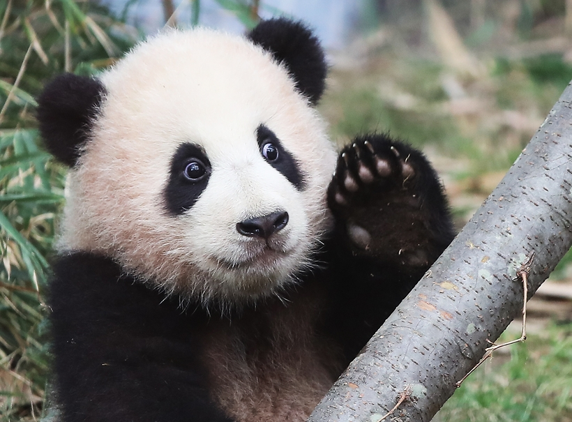

Fubao
- 출생: 2020년 7월 20일 (2세)
- 출생지: 경기도 용인시 처인구 포곡읍 전대리 519-21 (에버랜드 판다월드)
- 종: 자이언트 판다
- 성별: 암컷
- 가족: 아빠 러바오, 엄마 아이바오
- 담당 사육사: 강철원 사육사, 송영관 사육사, 오승희 사육사
2014년 중국 주석 시진핑의 방한 이후 에버랜드로 들여온 러바오와 아이바오의 새끼로, 2020년 7월 20일에 대한민국 최초로 자연 분만으로 태어난 판다이다. 현재 에버랜드에서 사육 중인 동물들 중 호랑이 남매들(태범, 무궁, 호랑이 오둥이)과 함께 가장 인기가 높은 동물이다. 이름의 뜻은 '행복을 주는 보물'이라는 뜻이다.